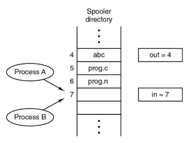
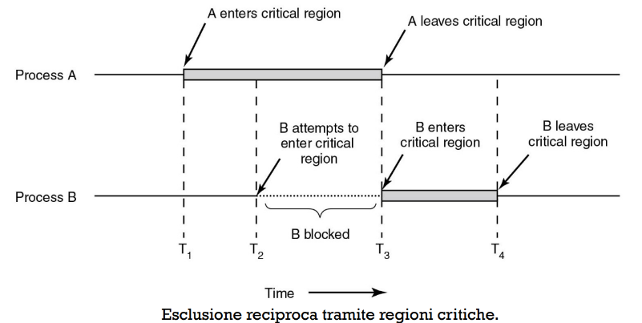

Comunicazione tra processi
I processi tra loro hanno bisogno di comunicare durante la loro esecuzione
- in particolare devono sincronizzarsi tra loro
- per evitare che si intralcino tra loro Se non sono sincronizzati in maniera adeguata possiamo incorrere nella RACE CONDITION
RACE CONDITIONS
esempio
- Il processo A legge il valore
in=7e decide di usare quella posizione.- Prima che A possa scrivere, viene sospeso.
- Il processo B legge lo stesso valore
in=7, decide di usare quella posizione, e la occupa.- Quando A riprende, sovrascrive il valore in posizione 7, ignorando che B aveva già scritto lì.
- Risultato: errore o perdita di dati. 
per evitarle usiamo
LE CRITICAL REGION
sono una parte di codice che può essere implementata in diversi modi(che poi vedremo) e che consente di isolare dei processi che vogliono condividere tra loro informazioni, seguendo delle regole Le regole:
- Solo un processo per volta può trovarsi dentro una regione critica
- La critical region deve essere indipendente dalle risorse come numero di CPU o velocità
- quindi deve funzionare in qualsiasi caso
- Un processo fuori dalla regione critica non può impedire ad altri processi di accedervi
- Un processo può aspettare per entrare in una regione critica ma non all’infinito
COSA NON FARE
- DISABILITARE GLI INTERRUPT: disabiliti la possibilità di far riallocare la CPU, ovvero passare le proprie risorse di calcolo ad altri processi.
- con INTERRUPT ci potrebbe essere una riallocazione che comporterebbe i problemi di prima
- questa cosa ha senso solo con CPU singole
- BLOCCARE LE VARIABILI:
- Qui si usano variabili per “bloccare” l’accesso alla Critical Region (es. variabili che indicano se una risorsa è in uso).
- Problema: Questo sposta il problema delle Race Condition sulle variabili stesse, perché più processi possono comunque interferire mentre leggono/scrivono la variabile di blocco.

Una non soluzione, esclusione reciproca con BUSY waiting (Alternanza Rigorosa)
abbiamo due codici uno per il processo1 e uno per il processo2 Codiceprocesso0:
while(TRUE){
while(turn!=0);
critical_region();
turn=1;
noncritical_region();
}Codiceprocesso1:
while(TRUE){
while(turn!=1);
critical_region();
turn=0;
noncritical_region();
}Cosa succede?
- la variabile è in comune con entrambi i processi
- faccio perché altrimenti il processo finirebbe 1 volta il suo compito e si terminerebbe
- quando il dentro è verificato il processo entra in un loop di attesa che si sbloccherà solo quando l’altro processo avrà finito
- una volta fatto entrerà nella regione critica(sotto forma di funzione)
- cambierà in 0 o 1
- esce dalla zona critica
Problemi
- Non puoi entrare 2 volte in una zona critica perché imposti all’opposto
- Un processo fuori dalla regione critica può modificare
Algoritmo di Peterson
- Alice e Bob vogliono usare un unico computer ma ci sono delle regole
- solo una persona per volta può usare il computer
- se entrambi vogliono usarlo devono decidere chi va primo
- Idea dell’algoritmo
- Alice o Bob devono segnalare il loro interesse a usare il computer
- Se l’altro non è interessato, la persona interessata può usarlo subito
- se una persona poi si interessa deve aspettare che l’altro finisca
- se una persona segnala di aver finito l’altra può iniziare
- se entrambe vogliono usarlo sarà in base all’ordine di chi segnala ad esempio chi scrive prima su un foglio
CODICE
#define N 2 /* numero di processi */
int turn; /* A chi tocca? */
int interested[N]; /* Tutti i valori inizialmente 0 (FALSE) */
void enter_region(int process) { /* process è 0 o 1 */
int other; /* numero dell'altro processo */
other = 1 - process; /* 1'opposto del processo */
interested[process] = TRUE; /* mostra che si è interessati */
turn = process; /* imposta il flag */
while (turn == process && interested[other] == TRUE) /* istruzione null */;
}
void leave_region(int process) { /* process: chi esce */
interested[process] = FALSE; /* indica l'uscita dalla regione critica */
}- codice per entrare nella regione critica
- si mette in input un processo o 0 o 1
- usiamo other per avere come riferimento gli opposti del processo
- poniamo il processo come interessato ad entrare
- mettiamo che diventa uguale a processo
- mettiamo in attesa se il processo è interessato ma l’altro processo è anche lui
- ipoteticamente dopo il while faccio la roba della regione
- abbandono della regione mette interesse a false
Come evitare i Busy Waiting
cosa sono?
Ci si può arrivare dalla sua etimologia, un processo o Thread che aspetta in maniera attiva|impegnata
- infatti abbiamo un ciclo while con il true ecc…
Per risolvere dobbiamo evitare lo spin lock e il busy waiting, ovvero non dobbiamo SPRECARE RISORSE
spin lock?
tipo di meccanismo di sincronizzazione dove i processi condividono delle risorse tra loro e sono attivamente in attesa, quindi si usa la busy waiting
la soluzione è che mettiamo i processi che prima di trovare un modo erano in stato di wait ora saranno in fase di sleep quindi blocked, quindi quei processi cederanno le risorse alla CPU e per essere riattivate si farà wakeup
Funzione sleep()
void sleep() {
set own state to BLOCKED; // Imposta lo stato su "bloccato"
give CPU to scheduler; // Rilascia la CPU
}
Funzione wakeup(process)
void wakeup(process) {
set state of process to READY; // Imposta il processo su "pronto"
give CPU to scheduler; // Scheduler assegna la CPU
}quando fa sleep si toglie dalla lista d’attesa dello scheduler quando qualcuno gli chiama wakeup si sveglia e si rimette in lista dello scheduler
CONCETTO DI PRODUTTORE CONSUMATORE
- due processi che condividono tra loro un buffer fisso
- uno sarà il produttore
- ha lo scopo di produrre dati e metterli sul buffer, se il buffer è pieno, dorme, viene risvegliato quando il consumatore legge i dati così che può riscriverli
- uno il consumatore
- dorme se il buffer è vuoto e viene risvegliato quando il produttore inserisce dati
- uno sarà il produttore
CODICI
CODICE PRODUTTORE
#define N 100
int count = 0;
void producer(void) {
int item;
while (TRUE) {
item = produce_item(); // Produci un elemento
if (count == N) {
sleep(); // Se il buffer è pieno, dormi
}
insert_item(item); // Inserisci l'elemento nel buffer
count++; // Incrementa il conteggio degli elementi
if (count == 1) wakeup(cons); // Risveglia il consumatore se era bloccato
}
}CODICE CONSUMATORE
#define N 100
int count = 0;
void consumer(void) {
int item;
while (TRUE) {
if (count == 0) {
sleep(); // Se il buffer è vuoto, dormi
}
item = remove_item(); // Rimuovi un elemento dal buffer
count--; // Decrementa il conteggio degli elementi
if (count == N - 1) wakeup(prod); // Risveglia il produttore se era
// bloccato
consume_item(item); // Consuma l'elemento
}
}Problema di questi due codici
- il consumatore sta per andare a dormire ma riceve un segnale di wakeup dal produttore, visto che sta per andare a dormire è ancora sveglio e quindi poi continua ad andare a dormire
- il produttore non ha piena coscienza di chi ha davanti e semplicemente invia il segnale di wakeup quando ha finito di scrivere nel buffer
- il consumatore potrebbe averci messo più tempo per leggere le cose e quindi non sta sincronizzato come il produttore
- il consumatore non si sveglierà mai più
Possibili soluzioni di questi due codici
c’è un bit che si occupa di tenere conto dei vari wakeup mandati quando un processo sta per andare a dormire. se questo bit è acceso il processo che sta per entrare in sleep si risveglia subito
- è un porkaround
La mutua esclusione: I semafori
concetto di semaforo ideato da Dijkstra nel 1965 Sistema per gestire i vari citati in precedenza il semaforo può avere 2 valori
- 0 quando non ci sono wakeup
- 1 quando ci sono dei wakeup in coda ad attendere
Operazioni possibili
- se viene fatta su un processo e il valore del semaforo è verrà decrementato
- se il valore raggiunge allora il processo che chiama verrà bloccato quindi andrà a dormire in una coda di attesa
- se il valore del semaforo è allora come abbiamo detto prima i processi sono in una coda di attesa
- uno di questi processi in attesa verrà risvegliato e continuerà la sua esecuzione
Chi chiama
downe chiup? Dipende dal ruolo dei processi:
Il produttore:
Chiama
downper verificare se c’è spazio libero nel buffer prima di produrre.Chiama
upper segnalare che ha aggiunto un elemento nel buffer (quindi c’è un dato disponibile per il consumatore).
Il consumatore:
- Chiama
downper verificare se ci sono dati disponibili nel buffer prima di consumare.- Chiama
upper segnalare che ha liberato uno spazio nel buffer (quindi il produttore può aggiungere un altro elemento).
concetto di atomicità
le operazioni sui semafori sono indivisibili quindi ogni operazione è a se evitando i conflitti
Diversi tipi di semafori
- mutex, accesso esclusivo evita accessi simultanei
- full, tutti i posti devono essere occupati
- empty, tutti i posti devono essere liberi
CODICE
CODICE PRODUTTORE
#define N 100
typedef int semaforo; // Definizione di tipo per i semafori
semaforo mutex = 1; // Semaforo mutex inizializzato a 1
semaforo empty = N, full = 0; // Semafori per spazi vuoti e pieni
void producer(void) {
int item;
while (TRUE) {
item = produce_item(); // Produce un elemento
down(&empty); // Aspetta uno spazio libero nel buffer
down(&mutex); // Accede al buffer in esclusiva
insert_item(item); // Inserisce l'elemento nel buffer
up(&mutex); // Libera l'accesso al buffer
up(&full); // Segnala che un nuovo elemento è disponibile
}
}- down praticamente decrementa la variabile corrente
- up la aumenta
- la variabile empty indica quanti spazi liberi ci sono in questo caso 100
- la variabile mutex se vale 0 blocca l’accesso agli altri se vale 1 lo rimette
#define N 100
typedef int semaforo; // Definizione di tipo per i semafori
semaforo mutex = 1; // Semaforo mutex inizializzato a 1
semaforo empty = N, full = 0; // Semafori per spazi vuoti e pieni
void consumer(void) {
int item;
while (TRUE) {
down(&full); // Segnala che un elemento è stato rimosso
down(&mutex); // Accede al buffer in esclusiva
item = remove_item(); // Rimuove l'elemento nel buffer
up(&mutex); // Libera l'accesso al buffer
up(&empty); // Segnala che è presente uno spazio in più
consume_item(item); // Consuma la risorsa
}
}fa la stessa roba ma rimuove gli elementi
UN’ALTRO PROBLEMA: LETTORI E SCRITTORI
- abbiamo R processi che vanno sul database e leggono
- abbiamo un processo che modifica il database posso avere più lettori perché alla fine leggono e basta se ho lo scrittore in esecuzione tutti devono levarsi dal cazzo
CODICE
Codice reader
typedef int sema; // Tipo per i semafori
sema mutex = 1; // Mutex per il contatore dei lettori
sema db = 1; // Accesso esclusivo al database
int rc = 0; // Contatore dei lettori attivi
void reader() {
while (TRUE) {
down(&mutex); // Blocca l'accesso al contatore dei lettori
rc++; // Incrementa il numero di lettori
if (rc == 1) // Se è il primo lettore
down(&db); // Blocca l'accesso al database per gli scrittori
up(&mutex); // Libera l'accesso al contatore
read_db(); // Lettura dal database
down(&mutex); // Blocca l'accesso al contatore
rc--; // Decrementa il numero di lettori
if (rc == 0) // Se è l'ultimo lettore
up(&db); // Sblocca il database per gli scrittori
up(&mutex); // Libera l'accesso al contatore
use_data_read(); // Usa i dati letti
}
}
nel codice della
- alzo e abbasso il quando vado a modificare il contatore
- alzo e abbasso il quando vado a usare il database e se sono il primo o l’ultimo dei readers
Codice writer
typedef int sema; // Tipo per i semafori
sema mutex = 1; // Mutex per il contatore dei lettori
sema db = 1; // Accesso esclusivo al database
int rc = 0; // Contatore dei lettori attivi
void writer() {
while (TRUE) {
think_up_data(); // Pensa ai dati da scrivere
down(&db); // Blocca l'accesso al database (esclusivo)
write_db(); // Scrive nel database
up(&db); // Sblocca l'accesso al database
}
}abbassa e alza
PROBLEMA DI QUESTA COSA
- se ci sono troppi lettori, lo scrittore ci metterà 90 anni per accedere Una soluzione potrebbe essere di creare una cosa e mettere in ordine lettori e scrittori in attesa